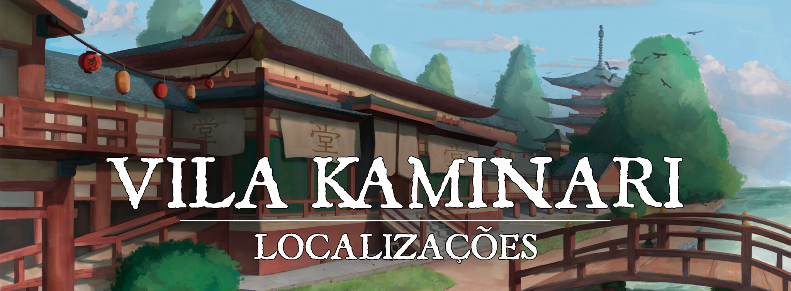

Vila Kaminari
Descrição
A Vila Kaminari é uma pequena comunidade portuária localizada no litoral oeste de Turgon. Com uma população de pouco mais de mil habitantes, a vila é conhecida por sua localização estratégica no meio de vários portos importantes que conectam Turgon ao resto do continente e por ser um local de peregrinação para os seguidores do unismo. A vila é habitada principalmente por pescadores e marinheiros, que são responsáveis por transportar os produtos da pesca e outros itens pelos portos e distribuí-los para as outras cidades de Turgon. A vila também tem uma pequena população de comerciantes e artesãos, que aproveitam a localização para comercializar seus produtos com os viajantes e os marinheiros. O porto é o coração da vila, onde os barcos são carregados e descarregados, e onde os moradores se reúnem para conversar e trocar histórias. A vila é cercada por uma bela paisagem costeira, com praias de areia branca e águas cristalinas.
Descrição Visual:
edo0.jpg |Vila Kaminari
{kind=link}
A Vila Kaminari é uma pequena comunidade costeira localizada ao oeste de Turgon. As casas são construídas com madeira e palha, com telhados inclinados e varandas largas. As ruas são estreitas e sinuosas, e as casas estão próximas umas das outras, criando uma sensação de comunidade apertada. O porto é o coração da vila, onde os pescadores trazem suas capturas e os comerciantes carregam suas mercadorias. Barcos coloridos estão ancorados no porto, balançando suavemente com as ondas. O ar é impregnado com o cheiro salgado do mar e os gritos dos seus habitantes e seus animais. A praia é uma extensão de areia branca, que se estende ao longo da costa, e é frequentemente utilizada pelos moradores para pescar e se divertir. Um pequeno templo de madeira construído em homenagem a Un Tennouji é visto logo na entrada da vila
Sociedade
População:
Composto em sua maioria por Humanos, Elfos, Meio-elfos e Shifters.
Cultura:
A cultura da vila é fortemente influenciada pela vida marítima, com muitos dos seus habitantes trabalhando como pescadores ou marinheiros. A vila tem uma forte tradição de comércio marítimo, com muitos dos seus habitantes envolvidos em negócios ligados ao mar, como o comércio de peixes e mariscos frescos.
A vila tem uma atmosfera tranquila e descontraída, com os habitantes tendo um estilo de vida simples e próximo à natureza. A maioria das casas são construídas com madeira e tijolos, com telhados de palha e janelas pequenas. A vila é cercada por belas paisagens de praias de areia branca e águas cristalinas.
A cultura da vila é fortemente influenciada pelo unismo, filosofia criada por Un Tennouji.
Caráter:
Os habitantes de Kaminari são conhecidos por serem amigáveis e hospitaleiros, sempre dispostos a ajudar os viajantes e estrangeiros que passam pela vila. Eles também são conhecidos por serem trabalhadores e dedicados, com muitos deles trabalhando arduamente para manter a vila florescendo. A vila é uma comunidade unida, onde todos se ajudam mutuamente e trabalham juntos para enfrentar as dificuldades da vida no litoral.
Datas e Festividades:
Festa das Barcas: é uma celebração anual que acontece na vila portuária de Kaminari, no oeste de Turgon. Durante esse evento, os moradores da vila se unem para celebrar sua tradição na construção de barcos. Como a vila é localizada no litoral, a construção de barcos é uma parte importante da economia e da cultura local.
A festa começa com os moradores construindo barcos coloridos e elaborados a partir de madeira nativa. Cada barco é decorado com desenhos e pinturas que representam a cultura e a história da vila. Os barcos são levados para o porto, onde são expostos e desfilados para os visitantes e moradores. A apresentação dos barcos é acompanhada por música tradicional e danças que são apresentadas por dançarinos locais.
À noite, a festa alcança seu ponto alto com a soltura de lanternas de papel pelos habitantes da vila. As lanternas são feitas de papel e estão iluminadas por velas. Elas são soltas no mar e levadas pela correnteza, criando um espetáculo de luzes incrível que atrai visitantes de toda a região. A festa é encerrada com uma grande celebração, com comida e bebida típica, e danças ao redor da fogueira.
A Festa das Barcas é uma celebração importante para os moradores de Kaminari, pois celebra sua tradição e cultura, e também é uma oportunidade para a vila se unir e se divertir juntos. A festa atrai muitos visitantes e turistas, que desfrutam das atividades, comida e espetáculos, e também podem aprender sobre a cultura e história da vila.
Religião:
O Unismo é uma filosofia que se baseia nos ensinamentos de Un Tennouji, que acreditava que o verdadeiro caminho do ser humano para alcançar a paz interior e o autoconhecimento é através de uma jornada própria de auto-aperfeiçoamento, e não pela devoção assídua aos deuses. Os seguidores do Unismo acreditam que a verdadeira sabedoria e o caminho para a iluminação espiritual podem ser encontrados através da meditação, reflexão e prática diária. Eles não negam a fé aos deuses, mas acreditam que a busca pela devoção fervorosa não é a única maneira de se aproximar da divindade. A vila Kaminari, localizada na costa oeste de Turgon, é considerada o berço do Unismo e muitos de seus habitantes seguem essa filosofia.
Economia
A economia da vila de Kaminari é baseada principalmente na pesca e no comércio marítimo. Os pescadores locais trazem sua pesca para o porto da vila, onde é vendida para outras cidades e vilas do continente. Além disso, o comércio marítimo é uma parte importante da economia local, com navios vindos de outras regiões para trocar mercadorias e comprar produtos pesqueiros frescos. A construção de barcos também é uma fonte de renda para muitos moradores da vila, já que eles são altamente requisitados devido à sua habilidade e qualidade. A indústria turística também está começando a se desenvolver, atraída pelas belas paisagens e pela história da vila.
Governo
A vila de Kaminari é governada por um líder escolhido pela própria comunidade. Esse líder é responsável por tomar decisões e tomar medidas para garantir o bem-estar da vila e de seus habitantes. Ele é escolhido através de votação, onde todos os cidadãos elegíveis podem votar e escolher quem consideram melhor para liderar a vila.
Esse líder é ajudado por uma pequena equipe de conselheiros, que são escolhidos por ele, mas que também são submetidos a aprovação da comunidade. Eles ajudam a líder a tomar decisões e a implementar políticas e projetos para melhorar a vida dos moradores.
Poderio Militar:
Mínimo
Conflito
Os conflitos com os youkais são comuns na vila de Kaminari, já que ela está localizada em Turgon, uma região com grande presença desses espíritos da natureza. Muitos dos youkais que vivem na floresta ao redor da vila se sentem ameaçados pela atividade humana, especialmente com a expansão da vila e a construção de novas casas e estradas.
Esses conflitos geralmente começam com pequenos incidentes, como a destruição de cultivos e a caça de animais sagrados para os youkais. No entanto, à medida que a tensão aumenta, eles podem se transformar em ataques maiores contra a vila e seus habitantes.
Os líderes da vila tentam manter a paz, estabelecendo acordos e oferecendo tributos para os youkais afetados.
Locais Relevantes
587f7768ee14b6a07b8b5937.webp |Porto Kaminari
{kind=link}
Porto Kaminari: Uma das principais atrações da vila é o porto, que é o centro da economia local e onde os barcos são construídos e desfilados durante a Festa das Barcas. O porto é frequentemente visitado por viajantes e comerciantes, e é onde a maioria dos negócios da vila é realizada. Além disso, é um lugar importante para a comunidade, pois é onde as pessoas se reúnem para celebrar as festividades e onde as barcas são construídas, o que é uma grande tradição da vila.
NPCs Relevantes
Satoshi: O líder da vila de Kaminari se chama Satoshi. Ele é um homem de meia idade, mas ainda forte e enérgico. Ele é conhecido por ser um líder justo e carismático, sempre disposto a ouvir as preocupações e opiniões dos moradores da vila. Ele é respeitado por todos e tem um grande senso de responsabilidade em relação à segurança e bem-estar da comunidade. Ele é um homem de família, casado com sua esposa, Yuka e pai de dois filhos, Rina e Kenji. Ele também é um pescador experiente e é muito respeitado por seus colegas pescadores da vila. Ele lidera a vila com sabedoria e liderança.
Avó Yui: A anciã da vila, conhecida por todos como Avó Yui, é uma figura respeitada e amada pela comunidade. Ela é uma mulher idosa, mas ainda forte e ativa, com olhos brilhantes e uma pele enrugada mas saudável. Avó Yui é a guardiã da sabedoria ancestral e dos costumes da vila. Ela é uma mestra em artesanato, especialmente na construção de barcos, e é frequentemente consultada pelos moradores para ajudá-los a resolver problemas e questões importantes. Ela é uma mediadora entre os habitantes e os youkais da floresta, e seu conhecimento sobre os costumes e as tradições dos espíritos da natureza é inestimável. Ela é também uma contadora de histórias incrível, e suas histórias são ouvidas com atenção pelos jovens e velhos. Avó Yui é a alma da vila e seu conselho é sempre respeitado e seguido.
Nutre uma paixão pelo seu ex marido, avô Yui da Vila do Sake, mas ela não admitirá isso de jeito nenhum.
Origem
A vila Kaminari nasceu a partir da jornada do grande líder espiritual Un Tennouji. Un, conhecido por sua sabedoria e carisma, reuniu uma grande quantidade de seguidores em sua busca pelo autoconhecimento e espiritualidade. Ele levou seus discípulos em uma longa jornada através das montanhas e florestas, ensinando-os os caminhos da verdade e da luz. Finalmente, Un decidiu que era hora de prosseguir sozinho em sua jornada e subir ao Monte Turgon, onde ele planejava alcançar a iluminação final. Antes de partir, ele escolheu um lugar na costa oeste de Turgon para seus discípulos estabelecerem um assentamento. Esse lugar, com vistas deslumbrantes para o mar e rodeado de belas florestas, se tornou o local ideal para construir suas casas e cultivar suas terras.
Assim, a vila Kaminari foi fundada pelos discípulos de Un, que se dedicaram a seguir os ensinamentos de seu mestre e a construir uma comunidade harmoniosa e próspera. Eles construíram um templo para homenagear Un e seus ensinamentos, e a vila se tornou um lugar sagrado para muitos peregrinos que buscavam orientação espiritual.
A vila foi batizada de Kaminari em homenagem ao Byakko, O Tigre Branco do Oeste, o último kami visitado por Un.